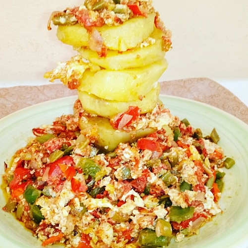

Yam and egg sauce recipe

How to make yam and egg sauce
Yam and egg sauce is a Nigerian dish that is commonly eaten as breakfast in most homes.
The dish contains nicely peeled and sliced yam (A starchy edible root of the Dioscorea genus that is mainly grown in Africa),
some eggs and fresh vegetables. In this tutorial I'll be walking you through how to to prepare this sumptuous and healthy meal.
Lists of ingredients needed to make yam and egg sauce
The quantity of ingredients can be adjusted according to the size of your family
- A medium sized tuber of yam
- Four raw eggs
- Vegetable oil. I usually add more oil than I would need if I were making scrambled eggs
- Fresh tomatoes and some fresh pepper
- Green, yellow and red bell peppers
- Onions and some salt to taste
How to cook yam and egg sauce
- Peel off the yam skin and cut to your desired shapes and sizes
- Wash the yam properly, place in a deep pot, add some water and some salt to taste
- Place the pot on the fire and allow it to cook.
- While the yam is boiling, it's time to wash and cut all your vegetables. Cut the vegetables to your preferred shapes and sizes.
The tomatoes and pepper should be in a separate bowl. Likewise the onion
- Once you are done with the vegetables, you should start making the egg sauce. So now place a pan on the fire
- Once it's heated, add your vegetable oil and allow it to heat. Remember to keep an eye on the yam. You'll know it's cooked when it becomes soft and tender.
Careful not to over cook it though
- On the hot oil, add the onion, stir for some minutes and add the cut tomatoes and pepper and stir from time to time
- Allow the excess water in the tomatoes and pepper to get dried, beat and add the eggs. DO NOT STIR IMMEDIATELY. Ok this might sound like a warning but it isn't that serious.
It's just so that the egg can have some chunks 😄 but feel free to do whatever you like.
- Stir and add some salt to taste. Some people like to add seasoning cubes but this is completely optional
- Stir and allow it to cook for some minutes and then bring it down
- By now your yam should be properly cooked but you can use a fork to confirm. Bring it down and sieve the excess water and set aside
- Add some pieces of yam to a flat plate, pour in some of the sauce and serve 😋